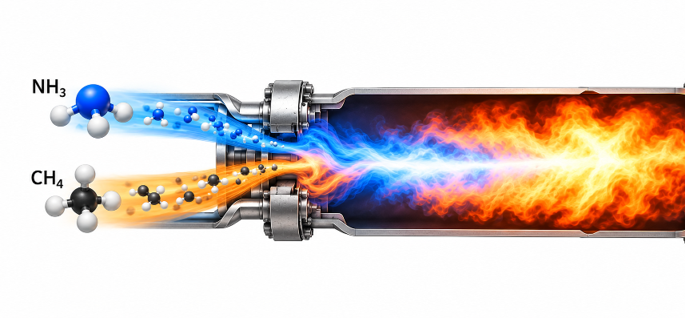
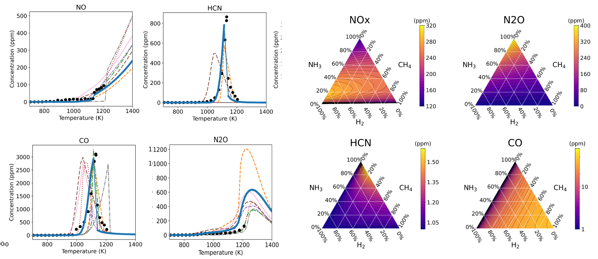
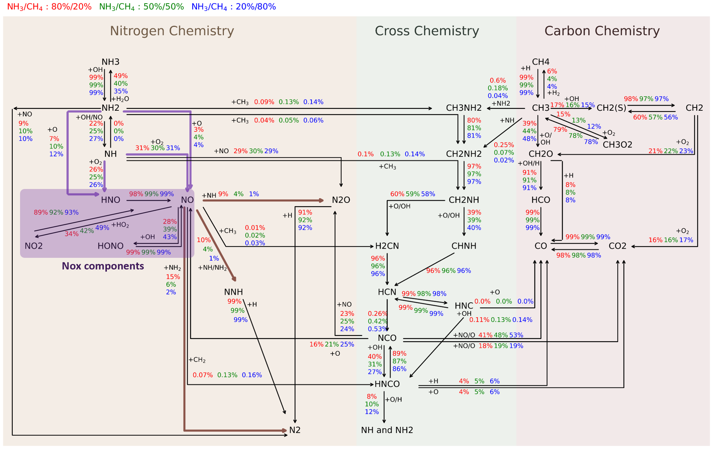

Ammonia-based combustion
Detailed kinetics for NH₃/H₂ and NH₃/H₂/CH₄ fuel blends, emphasizing combustion behavior and pollutant formation. The interactive view below shows the reaction network of the NH₃/CH₄ co-firing mechanism.

Automatic reaction network construction
Based on a quantum chemistry database for NH₃ and CH₄ reactions, the reaction network of the co-firing combustion system is constructed automatically.

Pollutant prediction
The mechanism predicts key pollutants (NO, HCN, CO, and N₂O) across temperatures, compared with experimental data and other mechanisms, and maps NOx, N₂O, HCN, and CO emissions over the full range of NH₃/H₂/CH₄ fuel compositions.

Key reaction pathways
Reaction path analysis traces the dominant routes through nitrogen, cross (C–N), and carbon chemistry for NH₃/CH₄ ratios of 80/20, 50/50, and 20/80, highlighting the pathways that form NOx components and convert NO to N₂O and N₂.
